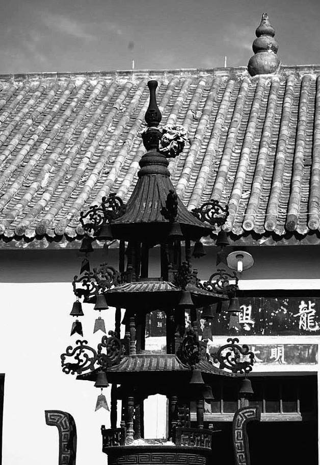
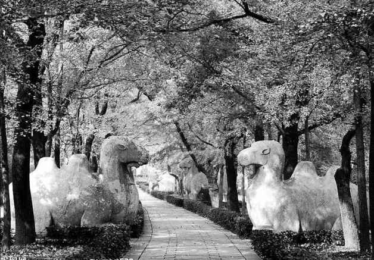

平常，从南山坡望去，旷野无际，野草萋萋。宽大的山坡几乎一直很平缓地向北延伸着，只偶有起伏，间或点缀着几株孤零零的树。一条清亮的河流绕着山坡，静静流淌，阳光下就像条白绸带。
此河名濠，小，长数十里。源有二，一自横涧山，一自定远城北，在濠州之南合流，蜿蜒东北而入淮水。小固小，却非无来历。很早以前，庄子常留连于此。濠水以澄澈出名，是“临渊羡鱼”的佳处，当年，庄子偕惠子同来赏鱼，留下一段“子非鱼”的巧辩典故。上千年过去了，平静的濠水好像再没有新奇故事发生，只是默淌。
至正[1]十二年，大旱令素常清亮的濠水全无往日风采，就像从少女红唇一夜之间变成老妇槁唇；鱼儿无影无踪，河床随处呈现网状裂缝；少量幸存的河水，薄薄的，奄奄一息，在河中央最凹处反射出光来，几乎看不出它在流动。
一条死水，犹如濠州的人心。
不过，此地人民对这情形倒也并不新鲜。七年前，一场更其凶烈的旱蝗之灾，旬日之间夺走成千上万条性命。那一年，单单是孤庄村朱五四老汉一家，五口人便死了三口，四月初六朱老汉头一个撒手人寰，三天后，轮着大儿子重四毙命，又十日，朱家妈妈陈二娘丢下老二重六和老幺重八，也追着老伴和大儿子去了阴曹地府；可怜那重八年方十六，竟眼睁睁十来天的工夫连丧父母和长兄。好些年后，孤庄村父老说起此事，还都直摇头叹气，直道：“惨哩……”
如今，当年人烟寥落、鸡犬声稀的景象，又在孤庄村重现。落日下，极目而眺，偌大的平野全然空旷，生生看不到一个人影，甚至不见鸟儿飞过，那份静详简直是一种透着忧伤的美，可是久处其中，却令人不免可怖。
就在南坡，一株老榆树下，有一小土堆微微隆起，没有什么特征，上面光秃秃地只长些荒草，而且经年风吹水刷，土包越来越平，眼看着就要流失了。但是绕着转过来，猛然却见一条大汉仰躺在土包旁，冷不丁吓你一跳！那汉身长八尺，黝黑精瘦；穿一条污烂污烂的直缀，敞着胸怀，夕阳洒落处，肋骨历历可数；破帽儿遮脸，肚皮一起一伏——竟是睡着了。

凤阳龙兴寺。
前身即朱元璋充小沙弥之皇觉寺，洪武初迁至现址，赐名“大龙兴寺”。

朱元璋孝陵神道。
孝陵，位于南京钟山。朱棣篡位迁都北京，其后诸帝皆葬北京十三陵，只剩下朱元璋孤零零在此。身后的冷清，最为形象地说明了朱元璋在皇权问题上自相矛盾所导致的失败。
“八哥，醒醒，醒醒……”
汉子猛一惊，睁眼看时，是打小一处厮混的周家小三子。但见他背负布包，神色匆忙，似要出远门的样子。
“小三子，你这是要去哪儿？”
“说不得，八哥，出事了。那封书信被人知道了，想告发官家讨赏哩。我寻思还是投汤二哥的好，咱一起走吧？”
汉子眼珠骨碌转了转：“真的么？”
“我还讹你不成？”周三儿顿足道。
汉子笑了：“兄弟，怎就改不掉你那急脾气？要不，你先行一步，哥哥我随后就来。”
“也罢。”周三儿拱手道，“八哥，那我就和汤二哥在濠州等着你。”
“一路珍重，兄弟。”汉子在周三儿肩头用力拍了拍。
目送周家小三子渐行渐远的身影，暮色下，汉子忽然感觉到一丝凉意。一群昏鸦飞了来，落在老榆树上，“啊，啊啊”的叫声送出，令本极辽旷的四野，更显冷清。
汉子悲从心起，掉头冲着小土堆翻身便拜：
“爹，娘！二老在世，教儿本分为人，儿原不想投汤二哥，如今村里人死的死，逃的逃，庙里和尚也散去大半，儿没了着落……儿今二十有五，实不甘再像八年前那般游食为生……爹啊娘啊，儿当如何，替儿拿个主意吧！”
言毕，就兜内摸出一面小铜牌，那还是自己刚生下来时，吃不得奶，爹上庙里拜菩萨时请回来的护身符。铜牌一面刻着观音像，汉子拿在手里，默想：“观音像若冲上则去，冲下则留。”于是开口道：“爹娘在上，且助重八则个！”
铜牌抛起，落在土坡草间，拨开一看，观音像冲上。再扔，如此；第三次又抛，仍如此。
汉子站起身，目光渐渐清澈，原本就有些凶悍的脸此时又蒙上了层刚毅之色。只见他头也不回地大步走了，直走到西下的夕阳血似的惨红里去……
——以上多系虚构，是当年读吴晗《朱元璋传》后，我在怀想明太祖朱元璋如何奋起于草莽之际，自己心里描画出来的一幅“复原图”。1978-1982年念大学期间，每年的寒暑假，我在合肥与上海之间这条铁路线上来来回回要穿行四次；每一次，列车行经临淮关-蚌埠这区间，我望着窗外的山川，脑中都止不住去浮想与朱元璋有关的旧事和画面。
虽是虚构，但人物和大的情节皆有所本。其中，那个周家小三子，是周德兴；汤二哥，就是汤和。这两个人，还有徐达，都是朱元璋（小名重八）打小一起的玩伴儿，后俱为明朝开国元勋。至正十二年郭子兴在濠州聚众反，汤和先行投了郭军，很快积功做到千户，此时他捎信给朱元璋，催促也来入伙；元璋初意未决，求之于卦，才赶到濠州，由汤和介绍加入义军。读史至此，不免慨然：一座小小的孤庄村，蹇伏浩野，无凭无依，却突如其来聚现了一个豪杰群体。历史的脉络，确非可以常理解释者。